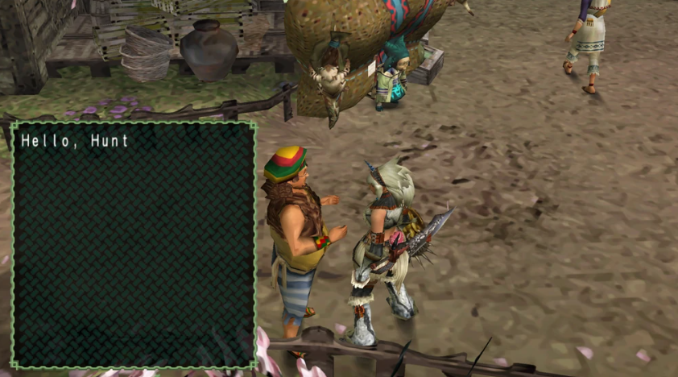

Debido a que MH Freedom es una version adaptada a la PSP del juego de PS2 MHG
este tiene diversas diferencias con respecto a su homonologo de sobremesa
siendo una de estas la granja, en la granja se hallaran puntos de recoleccion dependiendo de su nivel
a que me refiero con nivel? pues con este npc:

el dependiendo de que tanto haya avanzado el jugador en el juego no desbloqueara las mejoras
y para poder comprar dichas mejoras hay que usar puntos kokotos, que son digamos las monedas de la granja
estas se pueden conseguir vendiendo objetos a cualquier comerciante o en recogiendo ciertos objetos en misiones
A continuacion estan las mejoras y su manera de desbloqueo junto a su costo:
| Renovacion | Desbloqueo | Costo |
|---|---|---|
| Cresta de Campo+1 | Desde el inicio | 1000pts |
| Cresta de Campo+2 | Al canjear la Cresta de campo+1 | 3000pts |
| Muelle de Pesca+1 | Desde el inicio | 2500pts |
| Muelle de Pesca+2 | Despues de hacer la mision urgente "Ataque del Rathalos" y tener el Muelle de Pesca+1 | 5000pts |
| Maquina de Captura | Despues de hacer la mision urgente "Cuerno de Monoblos" y tener el Muelle de Pesca+2 | 10000pts |
| Punto de Mineria+1 | Despues de hacer la mision urgente "Ataque del Rathalos" | 8000pts |
| Punto de Mineria+2 | Despues de hacer la mision urgente "Invasion de Wyverns Gigantes" | 15000pts |
| Bomba de Mineria | Despues de hacer la mision urgente "El tiburon terrestre" | 30000pts |
| Matorral de Insectos+1 | Despues de hacer la mision urgente "El tiburon terrestre" | 2000pts |
| Matorral de Insectos+2 | Despues de hacer la mision urgente "Invasion de Wyverns Gigantes" | 15000pts |
| Arbol de Insectos | Despues de hacer la mision urgente "Terror de Gravios" | 7500pts |
| Arbol de setas | Desde el inicio | 1500pts |
| Arbol de setas+1 | Al obtener el arbol de setas | 4000pts |
| Arbol de setas+2 | Despues de hacer la mision urgente "El dragon terrestre" y de obtener el Arbol de setas+1 | 7000pts |
| Colmena | Despues de hacer la mision urgente "Cuerno de Monoblos" | 10000pts |